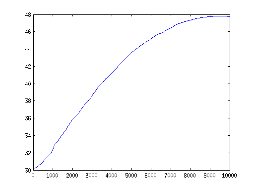

Flow simulation in 1D
| main | Tutorials | Functions | website |
This is a simple example on how to use the msim functions to solve the groundwater flow equations for 1D domains
Contents
Problem Description
The domain a 10 km line. The left boundary is a specified constant head and the right side is a specified flux. In addition we assume uniform recharge. First we specify some generic simulation options into a struct variable
opt.dim = 1; %This is the dimension of the problem opt.el_order = 'linear'; %This is the element order. The other option is 'quadratic' opt.assemblemode = 'vect';%other options are 'nested' and 'serial'. However you should always use 'vect' or leave empty
Mesh Generation
Next we define the 1D mesh. The mesh generation for this problem is trivial and there is no need to use Gmsh
L = 10000; %m domain Length % Discretize the domain into 5 m segments p = [0:5:L]'; Np = size(p, 1); %Number of nodes
To Define the mesh we use a structure variable with 2 rows. The first row corresponds to the zero dimension elements (e.g. points) and the second row to 1D elements (lines). Each row has the field elem with 1 or more rows depending on the number of elements. Each row of elem has 2 fields. id and type. id are the ids f the elements and type is the type pf the elements. Here we have only one type of elements
MSH(1,1).elem(1,1).id = [1:Np]'; MSH(1,1).elem(1,1).type = 'point'; MSH(2,1).elem(1,1).id = [(1:Np-1)' (2:Np)']; MSH(2,1).elem(1,1).type = 'line';
Boundary Conditions - fluxes
The fluxes are divided into two categories. Those that are applied on elements and those that are applied on nodes. To account for the element fluxes we define the following structure:
FLUX(1,1).id = (1:length(MSH(2,1).elem(1,1).id))'; FLUX(1,1).val = 2e-5 * ones(length(FLUX(1,1).id), 1); FLUX(1,1).dim = 1;% This is the dimension of the elements FLUX(1,1).el_type = 'line'; %ths is unnecessary for 1D problems FLUX(1,1).el_order = 'linear'; FLUX(1,1).id_el = 1; %This is the index in the Mesh.elem field FLUX(1,1).assemblemode = 'vect';
Next we will defined 2 point sources which extract water from the domain (e.g. wells). Let's assume that the sources are are located at x = 403 and 825 m. However, since the mesh has been created before the definition of the point sources we will assing the fluxes to the nearets node.
[~, id1] = min(abs(403 - p)); [~, id2] = min(abs(825 - p)); FLUX_point = [[id1;id2] [-0.05; -0.05]];
Last we will assign the flux boundary at the right side of the domain
FLUX_point = [FLUX_point; Np -0.01];
Boundary Conditions - Constant head
This is a simple matrix where the first column is the id of the node and the second column is the specified value
CH = [1 30];
Assemble the matrices
Before assembling the matrices we need to define a hydraulic conductivity. We will define the hydraulic conductivity as random variable.
K = normrnd(50, 10, 100, 1); x = linspace(0, L, 100)'; Knd = interp1q(x, K, p); Tnd = Knd *1;
Assemble the left hand side matrix
[Kglo, H] = Assemble_LHS(p, MSH(2,1).elem(1,1).id, Tnd, CH, [], opt);
Assemble the right hand side matrix
F_rch= Assemble_RHS(length(H), p, MSH, FLUX);
The Assemble RHS function essentially distributes the element fluxes to the mesh nodes. Now we have to add the point fluxes to the output of the RHS assemble
F_rch(FLUX_point(:, 1), 1) = F_rch(FLUX_point(:, 1), 1) + FLUX_point(:, 2);
Solve
Now we can solve the problem by invoking the following function and plot the results
Head = solve_system(Kglo, H, F_rch); plot(p, Head)